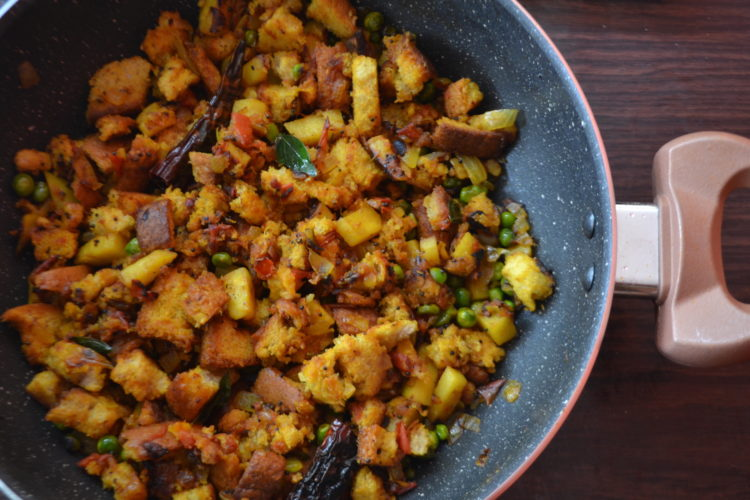

Bread Poha

This quintessential breakfast of India is a quick and easy dish to prepare. Originally from Maharashtra but has eventually gained popularity in all regions of India. Bread poha is a variation of Poha, with slices of bread added to the masala. A perfect quick new dish for kids and guests alike.
Ingredients
- 2 Tbsp Oil
- 1/8 tsp Hing
- 1 tsp Mustard seeds
- 5-6 Curry leaves
- 2 Whole red chillies
- 1 cups Cookes peas
- 1/2 cups Peanuts, roasted
- 1 tsp Turmeric powder
- 1 tsp Salt
- 4 nos Bread, chopped
- 2 Green chillies
- 1 tbsp Lemon juice
- 1/2 cups Coriander leaves
- Dessicated coconut
Steps
- Take a pan and put some oil in it for heating.
- When the oil is hot, add Hing to it.
- Add Mustard seeds, curry leaves and whole red chilllies.
- Saute them for a while and add cooked green peas.
- Now add roasted peanuts to the mixture and cook it until golden brown.
- Add turmeric powder and salt. Mix and put the bread slices into it.
- Mix them and sprinkle some water over it before adding the green chillies, lemon juice and coriander leaves in the end for a tangy taste.
- Garnish with dessicated coconut and serve hot.